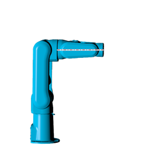
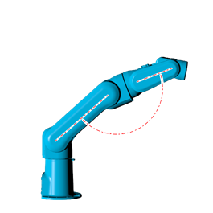
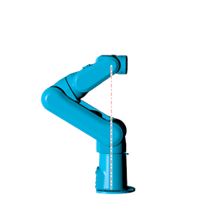

In a singular position, the end effector cannot move in certain direction, thus the manipulator loses one or more degrees of freedom (DOF). Furthermore, near singular configuration, some axes can move to a very large speed to maintain constant end effector speed.
In a 6 DOF robot arm, the most common singular positions are described below.
Wrist singularity occurs when the wrist and the first orientation axis are collinear.

Elbow singularity occurs when the arm is fully extended.

Alignment singularity occurs when the wrist and the base are aligned.

When a singular position is reached or is close enough and the system is not in joint mode, a ROBOTSTATUS error will be triggered by the relevant axis and the robot will stop at the configured WORLD_FASTDEC.
To leave the singular position, the system must be in joint mode.